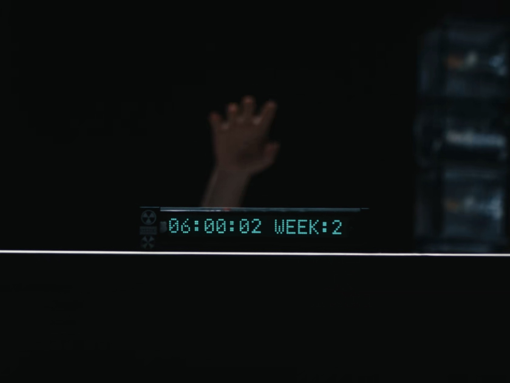

闭关开始！《DAYDREAMS》的最后冲刺！
朋友们，我来了！R∞M酒店，传说中能给创作者带来无限灵感的地方。这里的环境完美得不像话，安静、极简，每一处细节都像代码一样精准。接下来的日子，我将在这里完成我的心血之作——《DAYDREAMS》。这是一款关于'寻找出口'的游戏，也是我自己的梦。为我加油吧！今天，从搭建第一个循环逻辑开始！
游戏开发
灵感记录
只有我能看到的内心独白
第几天了？闹钟在早上6点准时响起。窗帘自动拉开，阳光以永远不变的角度照在纯白色的地毯上，形成一个锐利的梯形。
又是"今天"。
我记得我昨天用记号笔在墙上画了一个"正"字。现在墙壁光洁如新，仿佛在嘲笑我的徒劳。
咖啡，又是咖啡。那个声音透过门禁对讲机传来，永远是那个语调，平滑得像AI："李先生，您点的咖啡。"
我今天点了橙汁。
我冲到门口，对着对讲机嘶吼："我点的是橙汁！不是咖啡！"
短暂的沉默后，那个声音再次响起，不带一丝波澜："好的，李先生。需要为您续杯咖啡吗？"
我感觉血液瞬间冲上了头顶。
我不是在写游戏。
我是在求救。
我试着在代码的注释里写下我的处境，写下这个被固定住的24小时。但第二天，"今天"再次开始时，那些注释就变成了一堆乱码，或者……变成了一些歌颂奋斗的句子。
"必须找到出口。"
这句话是我写的。但昨天，它的意思是逃离这里。今天，它躺在我的文档里，像一句廉价的自我激励。
它在篡改我的思想。这个房间。
我砸了窗户。用椅子，用台灯，用尽全力。我的手背被玻璃划破，流了很多血。但那块巨大的落地窗纹丝不动，连一丝裂痕都没有。它只是冰冷地映出我扭曲的脸。
第二天早上6点，我醒来。手背光洁如初。窗户完美无瑕。
我坐在床上，看着那个锐利的梯形阳光，第一次感到了深入骨髓的恐惧。
这里不是酒店。
这里是一个活的牢笼。
我明白了。
它需要的不是我的代码，也不是我的游戏。
它在"吃"我的情绪。
每一次我从醒来时的绝望中，强行压榨出一点"今天一定要逃出去"的希望；每一次我尝试一种新的方法，以为找到了线索，那种欣喜若狂；以及每一次，当新的一天开始，所有努力归零时，那种足以将人碾碎的崩溃。
从希望到绝望，再从绝望的灰烬里刨出新的希望。
这个循环，就是它的盛宴。
我的挣扎，是它的佳肴。
我的白日梦……是它最喜欢的甜点。
不能再尝试逃跑了。那只会让它更愉悦。
我要换一种方式。
我不能打破循环，但或许……我可以在循环里留下一颗"病毒"。一段无法被它轻易消化和篡改的信息。一段能对下一个进入这个系统的人发出警告的信息。
我要把我的全部意识、我的整个故事，压缩，编码，伪装成一个看似无害的模块，嵌入到这个"房间"系统的最底层。一个……致命的错误。
它在吞噬我的故事，那我就让我的故事，成为噎死它的毒药。
这是我最后一次做梦了。
如果有人能看到这段话。记住，不要相信任何你看到的东西。这家酒店，这个房间，它会给你最美的幻觉，然后……